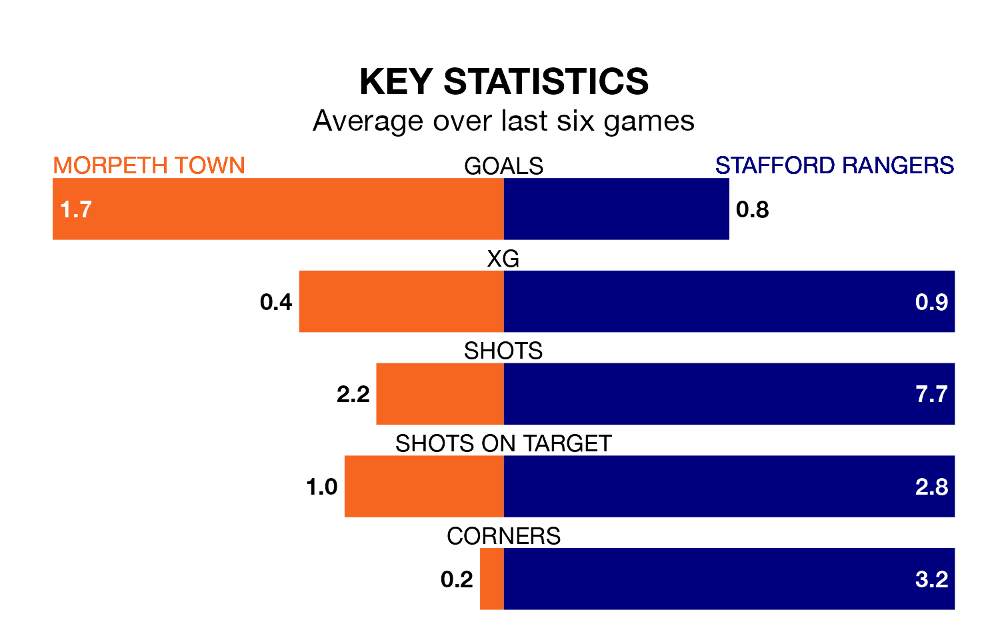

Morpeth Town are heavy favourites to keep all three points at home in Saturday's kick-off against Stafford Rangers.
Morpeth, who sit 13th in the Northern Premier League with 39 games played, are priced at 1.6 to seal victory.
Sitting seven places and 23 points behind them in the table, Stafford are 4.0 to win with *Betting Company*, while the draw is at 4.3.
With 36 goals in 39 games so far this season, Stafford are the league's second-lowest scorers with 0.9 goals per game. And they are conceding more than average, letting in 74 goals at a rate of 1.9 per game.
Morpeth, meanwhile, are above average scorers, with 1.9 goals per game, compared to a league average of 1.6. They have also conceded 1.9 goals per game.
In the last 10 years, Morpeth and Stafford have played each other on seven occasions. Morpeth won three of them, Stafford one, and they drew three times.
On average, Morpeth scored 1.6 goals and Stafford 1.0 in those matches.
Their last meeting was on November 11, when Morpeth won 3-0 away.
Town are in disappointing form in the Northern Premier League, with two wins and four losses from their last six games.
With three wins and three losses over that period, Rangers's form is better – they have taken nine points from 18, compared to the hosts' six.
Morpeth's last match was on April 20, a 3-2 loss against Ilkeston Town.
Stafford lost 1-0 against Ashton United last time out, also on April 20.
Updated: 07:59 (UTC), 26/04/24